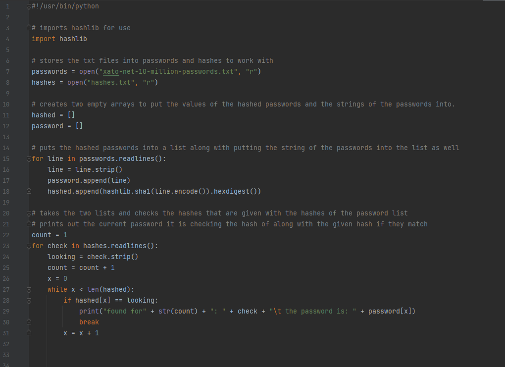
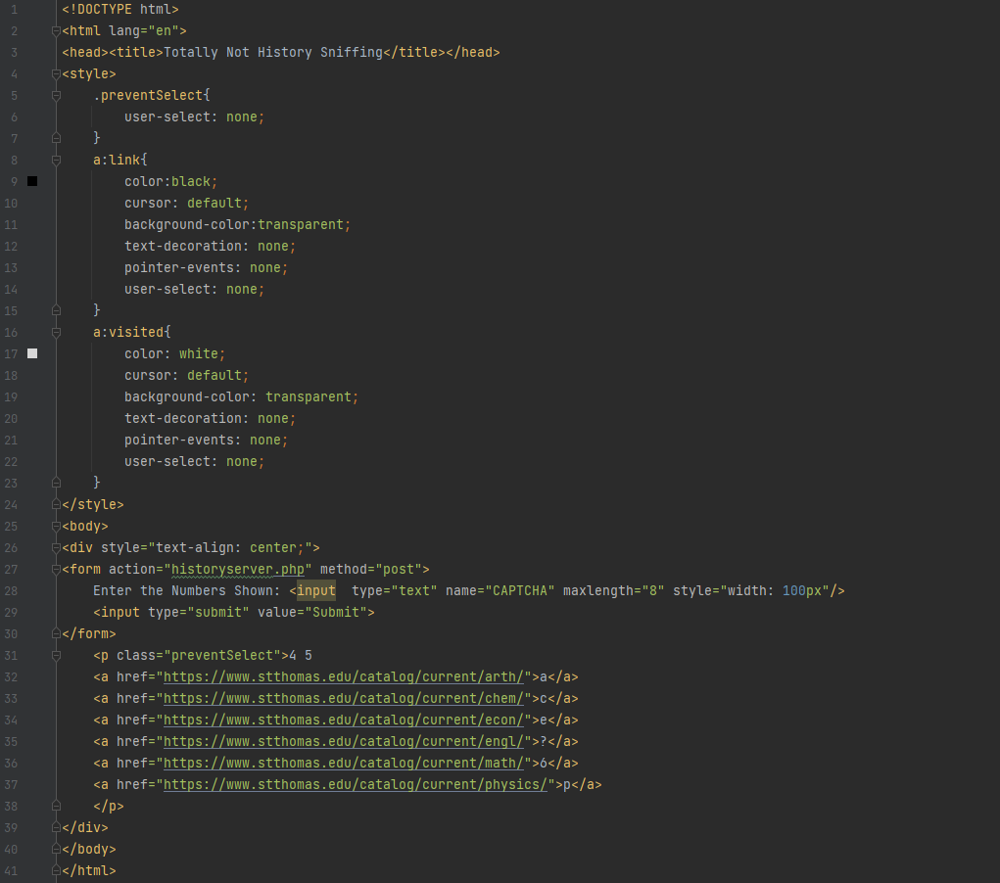

Pyrdle
CISC 131 with Dr.Hart
This is my 131 Pyrdle project. The point of this project was to introduce us to more python commands and help us make a interactive program. It was also meant to get us familiar opening up txt files for reading and using the informantion within the text files. What I did for this project was take the txt file which was a list of words have one word per spot in a array then pick one of the words at random to use for the word you'd have to guess. Then you are put into the game where you have 6 guesses to try and get the word. If you get a letter in the correct spot then it turns green otherwise if it is in the word but not the correct spot it turns yellow. If the letter is not in the word it doesn't change color. It runs in a loop until you hit either 6 guesses or guess the word which at that point it prints out "You Win" or "The Word Was: ____" and "You Lose".
HashFinder
CISC 350 with Dr.Yilek
The point of this project was to find what password matched the hashed password and output what password matched what hash. I set it up so that it opens two files the txt file contiaining all the different passwords and the txt with the hashes I was trying to figure out. After that it puts the contents of the files into two empty arrays and seaches each array to see if there are any matches. After it finds the matches it takes them and prints them out.

History Sniffing
CISC 350 with Dr.Yilek

The point of this project was to demonstrate our understanding of how captias could be used to determain what websites you have been to on your browser. What I did for this project was make a HTML page where it asked you to enter a Captia to continue. Depending on the letters and numbers you saw and entered it would send a post request to some php code which would print out a list saying you should visit these websites depending on what you entered.